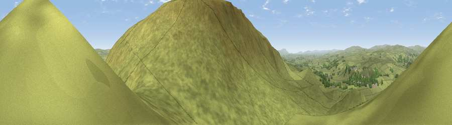

Stebden Hill
#9188 in England · top 11% of its area beats it · near LintonThe view, rendered

A 360° render of this exact spot computed from the terrain model, tree cover and land cover — summer colours, afternoon light, calibrated against photographs of famous viewpoints. Real trees, hedges and buildings will differ in detail.
The panorama
Grey silhouette: terrain skyline in each direction (720 bearings, Earth curvature and refraction included). Dashed green: skyline with trees (+15 m) and buildings (+8 m) as obstacles. Blue strip: how far the ground is visible on each bearing.
Where the view opens
Wedge length = distance to the farthest visible ground on that bearing (vegetation-aware). Rings at 10, 25 and 50 km.
What fills the view
96% grassland · 3% woodland
Angular shares of the visible panorama (visual magnitude), not map area. Landscape diversity 0.07 (0–1 Shannon).
Key numbers
More beautiful places nearby
The staircase of upgrades: each row has a higher view potential than everything closer. Driving times are estimates from straight-line distance, calibrated against real road routing — check an actual route before setting out.
| Place | Direction | Drive | Score |
|---|---|---|---|
| Viewpoint near Burnsall | SSE · 1 km | ~4 min | 67.4 |
| Cracoe Fell | SSW · 2 km | ~6 min | 75.1 |
| Viewpoint near Bewerley | ENE · 13 km | ~24 min | 75.7 |
| Viewpoint near Bewerley | ENE · 13 km | ~24 min | 76.8 |
| Viewpoint near Buckden | NNW · 18 km | ~32 min | 77.3 |
| Viewpoint near Otley | SE · 26 km | ~42 min | 77.5 |
| Viewpoint near East Witton | NNE · 28 km | ~44 min | 77.8 |
| Little Ingleborough | WNW · 29 km | ~46 min | 78.8 |
54.04316, -1.99829 · source: osm peak · position refined by local search. Computed location — check access rights before visiting.